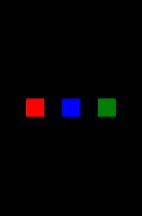

音の再生を中断・再開する方法
phina.jsで音の再生を中断・再開するには、 pauseMusicメソッドとresumeMusicを使います。。
pauseMusicメソッド
// タッチイベント
pauseBtn.onpointend = function() {
// 一時停止
SoundManager.pauseMusic();
};
- 音現在再生されている音楽を中断します。
resumeMusicメソッド
// タッチイベント
resumeBtn.onpointend = function() {
// 再開
SoundManager.resumeMusic();
};
- 中断されている音楽を再開します。
サンプルコード
コードを見る
```js // グローバルに展開 phina.globalize(); // アセット var ASSETS = { // サウンド sound: { 'bgm': 'https://cdn.jsdelivr.net/gh/alkn203/assets_etc@master/maou-fantasy-01.mp3', }, }; /* * メインシーン */ phina.define("MainScene", { // 継承 superClass: 'DisplayScene', // コンストラクタ init: function() { // 親クラス初期化 this.superInit(); // 背景 this.backgroundColor = 'black'; // 再生ボタン作成 var playBtn = Shape({ backgroundColor: 'red', x: this.gridX.center(-4), y: this.gridY.center(), }).addChildTo(this); // タッチを有効に playBtn.setInteractive(true); // タッチイベント playBtn.onpointend = function() { // 音再生 SoundManager.playMusic('bgm'); }; // 中断ボタン作成 var pauseBtn = Shape({ backgroundColor: 'blue', x: this.gridX.center(), y: this.gridY.center(), }).addChildTo(this); // タッチを有効に pauseBtn.setInteractive(true); // タッチイベント pauseBtn.onpointend = function() { // 一時停止 SoundManager.pauseMusic(); }; // 再開ボタン作成 var resumeBtn = Shape({ backgroundColor: 'green', x: this.gridX.center(4), y: this.gridY.center(), }).addChildTo(this); // タッチを有効に resumeBtn.setInteractive(true); // タッチイベント resumeBtn.onpointend = function() { // 再開 SoundManager.resumeMusic(); }; }, }); /* * メイン処理 */ phina.main(function() { // アプリケーションを生成 var app = GameApp({ // MainScene から開始 startLabel: 'main', // アセット読み込み assets: ASSETS, }); // fps表示 //app.enableStats(); // 実行 app.run(); }); ```使用素材について
音楽：魔王魂
runstantプロジェクト
音の再生を中断・再開する- 赤い矩形タッチで音楽再生
- 青い矩形タッチで音楽中断
- 緑の矩形タッチで再開